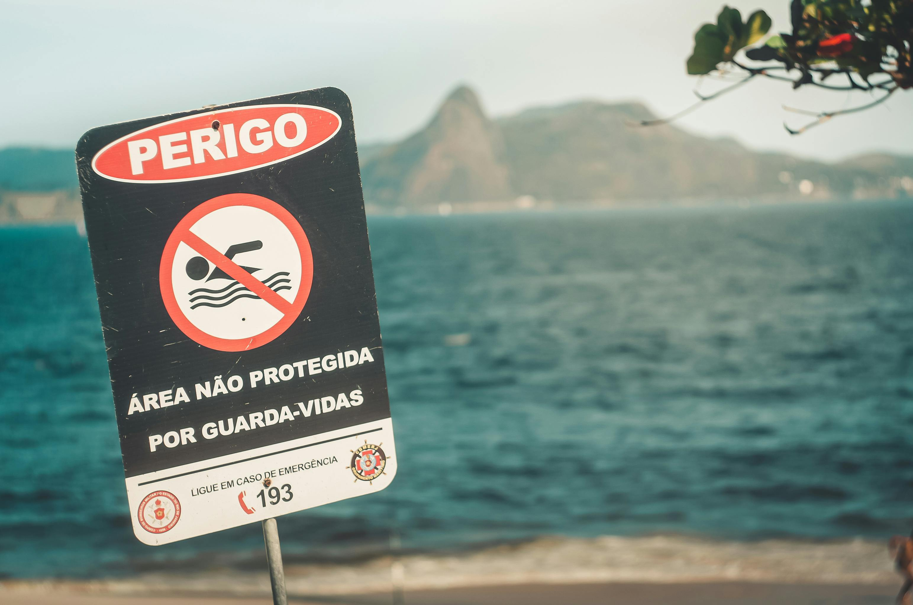
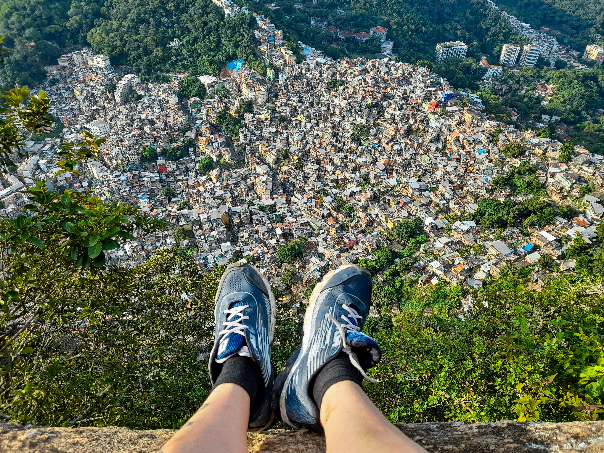
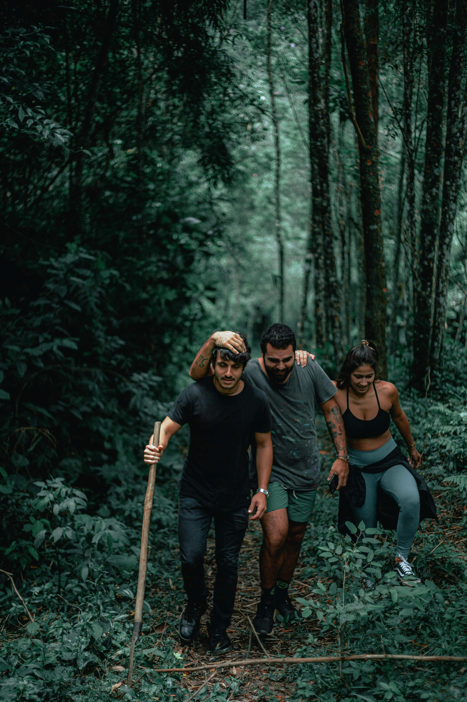

Destino nacional existe no fluxo de cotação
No site da Assist Card Brasil, o formulário de cotação lista a opção de destino “Dentro do meu país”, com origem Brasil. Ou seja: existe contratação voltada a viagens domésticas.
Muita gente acha que, se já tem plano de saúde, não precisa pensar em seguro viagem numa viagem doméstica. Na prática, eu vejo diferente: uma coisa é cobertura assistencial do plano dentro da sua área geográfica e da rede disponível; outra é a camada extra de operação da viagem — bagagem, documentos, deslocamentos, suporte e imprevistos que um plano de saúde normalmente não resolve sozinho.
Plano de saúde cobre assistência conforme contrato, abrangência e rede; seguro viagem entra para complementar o que a viagem pede.
Quanto mais deslocamento, mais sentido faz ter uma camada extra para emergência e logística.
Atrasos, conexões, bagagem e documentos entram na conta real do embarque — e não só a parte médica.
Em feriado, praia, serra ou férias com crianças, a conveniência e o suporte costumam pesar bastante.


A ANS orienta que o consumidor verifique no contrato a área geográfica de cobertura do plano, que pode ser nacional, estadual, grupo de estados, municípios ou grupo de municípios. E a garantia de acesso depende de o atendimento ser demandado dentro da área de abrangência geográfica do contrato. Em outras palavras: antes de assumir que “meu plano cobre tudo”, vale checar a regra do seu plano e da sua viagem específica.
Seu contrato pode ter abrangência nacional, estadual ou local. Isso muda a leitura da viagem.
Mesmo com cobertura, a experiência depende da rede e da disponibilidade no destino ou na região.
Bagagem, documentos, atraso e suporte não costumam ser resolvidos por um plano de saúde.
Estrada, interior, barco, feriado, serra, praia ou conexão aérea aumentam a complexidade real da viagem.
No site da Assist Card Brasil, o formulário de cotação lista a opção de destino “Dentro do meu país”, com origem Brasil. Ou seja: existe contratação voltada a viagens domésticas.
A Assist Card descreve seu produto como assistência integral em viagem e cita coberturas médicas e de medicamentos, seguro bagagem, cobertura para compra de eletrônicos em viagem e ajuda em caso de roubo ou perda de documentos.
A própria marca alerta que seguro viagem não é seguro saúde e que é preciso observar condições contratuais, direitos, obrigações e limite de capital segurado de cada cobertura.
Quando a viagem é de carro, cruza estados, passa por trechos remotos ou exige várias horas de estrada, o risco logístico aumenta e a camada extra costuma valer mais.
Trilhas, barco, mergulho, bike, praia, cachoeira ou esporte recreativo mudam a leitura da exposição e do suporte que você pode querer ter à mão.
Com família, bagagem, carrinho, conexões ou viagem em feriado, conveniência operacional pesa quase tanto quanto a parte médica.
A própria regulação da ANS mostra que a assistência do plano gira em torno da área geográfica e da rede. Já uma viagem doméstica pode ter múltiplas camadas: estrada, aeroporto, mala, conexão, feriado, família e região remota. É por isso que eu vejo o seguro viagem nacional menos como “duplicação” e mais como complemento inteligente.
Em viagem doméstica, eu não contrataria no automático. Mas também não descartaria no automático. Eu olharia duração, destino, tipo de deslocamento, perfil do grupo, bagagem, custo da viagem e o quanto eu teria de improvisar se algo desse errado.

Não é uma regra automática. Mas também não é automático que o plano resolva tudo. A leitura correta passa por área geográfica, rede disponível e tudo aquilo que extrapola a parte médica da viagem.
Ele tende a oferecer uma leitura mais ampla do território, mas vale conferir o contrato, a rede e a experiência real no destino. Abrangência nacional não significa que a viagem inteira esteja operacionalmente coberta em qualquer cenário.
Não. Na FAQ oficial da Assist Card, o anual multiviagens é apresentado como cobertura apenas para viagens internacionais.
Não. A própria Assist Card reforça isso em seu site. O que vale é o conjunto de coberturas, limites, exclusões e condições do produto contratado.
Para o Lipe Travel Show, a melhor monetização é contexto antes do clique. Veja se seguro viagem nacional faz sentido para o seu roteiro, entenda onde o seu plano ajuda e onde o seguro pode complementar — e só depois feche.
Importante: condições gerais, coberturas, preços, promoções e regras operacionais podem mudar a qualquer momento no site oficial da Assist Card. Antes de contratar, confira o voucher e as condições do plano escolhido. Esta página é editorial e explicativa, com link de afiliado.
Se quiser seguir da inspiração para a decisão, você também pode acompanhar o conteúdo do Lipe Travel Show em vídeo, redes e guias editoriais.